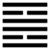

Thuần Ly (離 lí)
Khảm là hãm, hãm thì phải có chỗ nương tựa, cho nên sau quẻ Khảm tới quẻ Ly. Ly [離 ] là lệ [ 麗] ; thời xưa hai chữ đó đọc như nhau, dùng thay nhau được, như nước Cao Ly (Triều Tiên) viết là [高麗 ]. Mà lệ có nghĩa là phụ thuộc vào (như từ ngữ lệ thuộc), dựa vào. Theo hình quẻ, một nét âm ở giữa dựa vào hai nét dương ở trên, dưới.
Ly còn nghĩa thứ nhì là sáng: nét ở giữa dứt, tức là ở giữa rỗng, rỗng thì sáng. Lửa sáng, mặt trời sáng, cho nên Ly có có tượng là lửa, là mặt trời.
Sau cùng Ly còn có nghĩa là rời ra, như chia Ly.
Kinh Dịch mở đầu bằng hai quẻ Càn, Khôn (trời đất); tới giữa Kinh. (cuối phần thượng của Kinh) là hai quẻ Khảm, Ly, vì hai lẽ.
Ba hào thuần dương là Càn, lấy một hào của Khôn thay vào hào giữa của Càn, thành Ly; ba hào thuần âm là Khôn, lấy một hào của Càn thay vào hào giữa của Khôn, thành Khảm; vậy Ly, Khảm là “thiên địa chi trung”, ở giữa trời, giữa đất; công dụng tạo hóa của trời đất nhờ lửa và nước (Ly và Khảm) cả. Khảm ở chính bắc, Ly ở chính nam; Khảm ở giữa đêm (giờ tí), Ly, ở giữa trưa (giờ ngọ).
Khảm, ở giữa là nét dương, liền, thực, cho nên đức của nó là trung thực. Ly ở giữa là nét đứt, hư, rỗng, cho nên đức của nó là sáng, là văn minh.
Thoán từ:
離: 利貞, 亨．畜牝牛, 吉．
Ly: lợi trinh, hanh. Súc tẫn ngưu, cát.
Dịch: Dựa, lệ thuộc: chính đáng thì lợi, hanh thông. Nuôi bò cái thì tốt.
Giảng: Dựa vào chỗ chính đáng, chẳng hạn vào người quân tử thì hanh thông. Dựa vào người thì phải sáng suốt, và thuận theo người, vậy phải nuôi đức thuận, đức của con bò cái (loài này dễ bảo nhất) thì mới tốt.
Ly còn nghĩa là sáng. Quẻ thuần Ly, trên dưới đều là Ly, sáng quá, sáng suốt quá, tỏ mình hơn người thì ít người ưa, cho nên phải giấu bớt cái sáng đi mà trau giồi đức thuận.
Thoán truyện bảo phải có đức trung chính nữa như hào 2 và hào 5 (hào này chỉ trung thôi, nhưng đã đắc trung thì cũng ít nhiều đắc chính) như vậy mới cải hóa được thiên hạ, thành văn minh.
Hào từ:
1.
初九: 履錯然, 敬之, 无咎．
Sơ cửu: Lý thác nhiên, kính chi, vô cửu.
Dịch: Hào 1, dương : Dẫm bậy bạ; phải thận trọng thì không có lỗi.
Giảng: hào dương này có nghĩa nóng nảy, cầu tiến qua, mà còn non nớt, chưa có kinh nghiệm, như đứa trẻ vội vàng dẫm bậy bạ (Phan Bội Châu hiểu là sỏ giày nhố nhăng), tất có lầm lỗi, nên khuyên phải thận trọng (kính chi).
2.
六二: 黃離, 元吉．
Lục nhị: Hoàng ly, nguyên cát.
Dịch: Hào 2, âm : Sắc vàng phụ vào ở giữa, rất tốt.
Giảng: hào này ở quẻ Ly có đức văn minh, lại đắc trung, đắc chính, trên ứng với hào 5 cũng văn minh, đắc trung, nên rất tốt. Vì ở giữa, văn minh, nên ví với sắc vàng, đẹp, sắc của trưng ương như đã giảng ở hào 5 quẻ Khôn và hào 5 quẻ Phệ hạp.
3.
九三: 日昃之離, 不鼓 缶而歌, 則大耋之嗟, 凶．
Cửu tam: Nhật trắc chi Ly, bất cổ phẩu nhi ca, tắc đại diệt chi ta, hung.
Dịch: Hào 3, dương : mặt trời xế chiều lặn, (ý nói người già, tính tình thất thường, không đáng vui mà vui. Không đáng buồn mà buồn). Khi thì gõ cái phẫu (vò bằng đất, đựng rượu mà cũng dùng làm nhạc khí) mà hát, lúc lại than thân già nua; xấu, (Hồi xưa khi hát thì gõ nhịp bằng cái phẫu).
Giảng: Hào 3 này ở trên cùng nội quái ly, như mặt trời sắp lặn mà chưa lên ngoại quái Ly, chưa tới lúc mặt trời mọc (sáng hôm sau).
Câu: “bất cổ phẫu nhi ca, tắc dại diệt chi ta”, Chu Hi hiểu là “chẳng yên phận mà vui vẻ, mà lại than thở vì già nua, thế là không biết tự xử.”
4.
九四: 突如, 其來如, 焚如, 死如, 棄如．
Cửu tứ: Đột như, kì lai như, phần như, tử như, khí như.
Dịch: Hào 4, dương: thình lình chạy tới, như muốn đốt người ta vậy, thì sẽ chết, bị mọi người bỏ.
Giảng: Hão này dương cương, nóng nảy, bất chính, bất trung, mới ở nội quái lên, gặp hào 5 âm nhu, muốn lấn át 5, như một người ở đâu thình lình tới, lồn lộn lên muốn đốt người ta (hào 5), táo bạo, vụng về như vậy làm sao khỏi chết, có ai dung được nó đâu.
5.
六五: 出涕沱若, 戚嗟若, 吉．
Lục ngũ: xuất thế đà nhược, thích ta nhược, cát.
Dịch: Hào 5, âm: Nước mắt ròng ròng, nhưng biết buồn lo than thở, nên tốt.
Giảng: Hào này âm nhu, ở ngôi tôn, trung những không chính, bị ép giữa hào hào dương, mắc vào hoàn cảnh khó khăn, cho nên bảo là “nước mắt ròng ròng”; nhưng nhờ đức văn minh của quẻ Ly, nên là người biết lo tính, than thở, tìm cách đối pó với hoàn cảnh được, cho nên rồi sẽ tốt.
6.
上九: 王用出征, 有嘉; 折首, 獲匪其醜, 无咎．
Thượng cửu: Vương dụng xuất chinh,
Hữu gia; chiết thủ, hoạch phỉ kì xú, vô cữu.
Dịch: Hào trên cùng, dương: vua dùng (người có tài, tức hào này) để ra quân chinh phạt, có công tốt đẹp, giết đầu đảng mà bắt sống kẻ xấu đi thì thôi, như vậy thì không có lỗi.
Giảng: Hào này dương cương lại ở trên cùng quẻ Ly, thế là vừa cương quyết vừa sáng suốt đến cực điểm, vua dùng tài ấy để trừ kẻ gian tà thì thành công lớn.
Nhưng vì cương quá thì dễ hóa tàn bạo, nên Hào từ khuyên dẹp loạn thì chỉ nên giết những kẻ đầu sỏ, còn những kẻ đi theo thì bắt sống thôi. Như vậy sẽ không có lỗi.